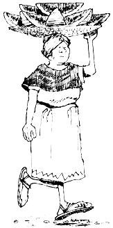
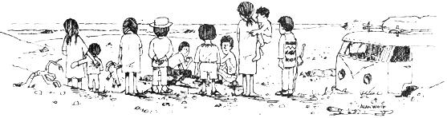

There's no legal reason why long-hairs can't enter Mexico. But the straighter you look the easier-and less expensive-your entry will probably be. Mexican customs officials are only human ... and they've been getting a lot of pressure to crack down on "heepies".
When you show up at the border you'll have to get a tourist card from customs and this is free.. there is gratis stamped all over it. Any attempts to charge you for the privilege of entering Mexico are definitely not official... but you may have to grease a corrupt palm or two anyway.
You'll also have to be able to prove your citizenship. A birth certificate (not a hospital record), a voter's record or a passport does the job. A driver's license doesn't. That's all I had, and though it only cost $2.00 to soothe the officer's conscience, I would have been in hot water if we'd stopped by the federales at any time we were in Mexico.
You don't need anything else in the way of documents, nor do you have to get shots. Sometimes they want to see some money... $300 or $400 should be plenty. Don't bring any dope, guns or pets.
Make sure you ask for the six-month visa. That's the maximum you can stay in one entry. If you hem and haw when the official asks how long you're going to be in Mexico, chances are he'll slap a two-week visa on you and there's no earthy way to get that changed except by leaving the country and entering again.
We did our traveling in a '59 VW van. Naturally, you'll use whatever you have... but I would plug a little for the VW. Our doesn't have windows, which turned out to be a real blessing. There are times when you'll find yourself a curiousity-especially in tiny vilages where they haven't seen many gringos, much less "heepies"-and, in a windowless bus, you can get away from the stares when you get really desperate.
Then too, if you can't find a campsite, your van will come in mighty handy as a place to sleep. You can also rig up a little camp stove for cooking in the bus... and take along a chamber pot (this can be the most prized of all your gear when you're having the Mexican Rush without the vaguest idea of where you might find a toilet or bush that isn't in front of someone's shack.)
Finally-should you have any mechanical trouble you can't fix yourself-there are VW agencies in most sizable towns. But best be able to do minor repairs no matter what... and if you're going back in the jungle, the more tools and know-how you carry along, the better.
Avoid the supermercados -they specialize in processed foods that cost a lot more than back in the USA. Find the for-real mercado where the country folks bring in their meat, eggs, fruit and vegetable to sell. Every market has a personality of its own and the most fascinating are those in the south, dominated by Indians who are happily un-Europeanized.
The food is incredibly cheap: 20 tangerines for a peso (8 cents), a kil (2.2 pounds) of cherry tomatoes the same, fish at (20 cents) a pound, shrimp for 30 cents. Of course there aren't any food chains (if you're not in avocado country you don't find any avocados). Get in tune with the land, learn to eat what's available and you'll probably find that marketing become more of an outing than a chore... which is fortunate because, with no refrigeration, you'll have to buy food everyday.
Haggle a little with the seller-it's expected of you and it's also fun. At first it may be a little hard to quarrel with the fantastically low prices, but you'll get into it eventually. Naturally, if you can speak Spanish you've got a head start... but sign language works pretty well. If you say " Cuanto por los..." (How much for the ...) and point, you'll get the price before you get a bagful.
Don't drink the water. Take along a five-gallon can and buy distilled water (it comes in five-gallon bottles, and-if you pour it into your own container you'll save the 16-peso deposit). The water itself costs only about 15 cents. The real problem is finding the water seller...everyone in town knows who he is so he never advertises. Take along some halizone tablets for emergencies.
Finding a place to camp isn't much trouble. Almost every town has church square. This is public property and we've spent many a night in our VW bus bothered only by bonging bells. Out of town almost anywhere is hassle-free, although you have to seach hard to find a place with privacy. There are lots of hillsides, roadsides and beaches but do avoid anything that looks like "respectable" private property. Mexican landowners are extremely nervous... as all the iron fences and padlocks testify.
Most Mexican rip-off artists seem to be professionals and naturally, they tend to hang around the big city-Mexico City especially-service stations and tourist resorts. Anytime you have to be in those place, watch your stuff closely. Or do as we did... avoid such areas altogether.
Cameras, tape players and fancy equipment of any kind attracts theives so it's a good idea to leave unnecessary valuables behind.
Beware of the "false friend" trick. A guy may say he's a mechanic and can help you fix our bus. He'll tinker around a bit, say he's going to look for a friend to help and pretty soon you notice all your socket-wrenches are gone. Or a fellow may sit by your campfire and talk. Eventually he'll let it be known that he could use four pesos for the bus home. You say "Hell, yes!" and give him six. Next morning you discover the folks next to you got hit up for four and the ones over the dune gave him eight. What can you do? Be friendly but don't believe every hard-luck story you hear.
And then there are the notorious federales the notion that you can blow grass freely from one end of Mexico tothe other is a dangerous myth. Many of the federales are trained narcotics agents and Mexico has been strongly urged to crack down on gringo dope smoking. We have no reason to believe that federales actually plant grass on anybody, but you'll probably be stopped occasionally for a dope check... often at very unexpected times. If you're straight, it's a short and painless business. But if you've got something, it's a mess... and the U.S. embassy doesn't like to get involved. Best policy: don't have anything. Next best: be very discreet.
|
 |
 |
|